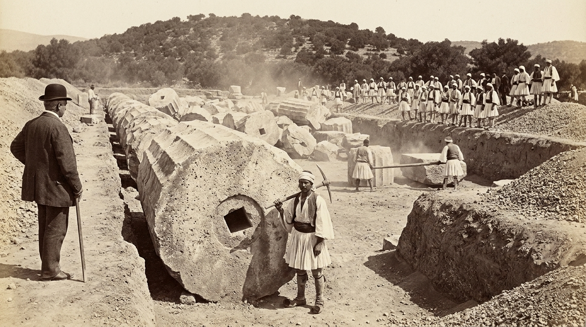
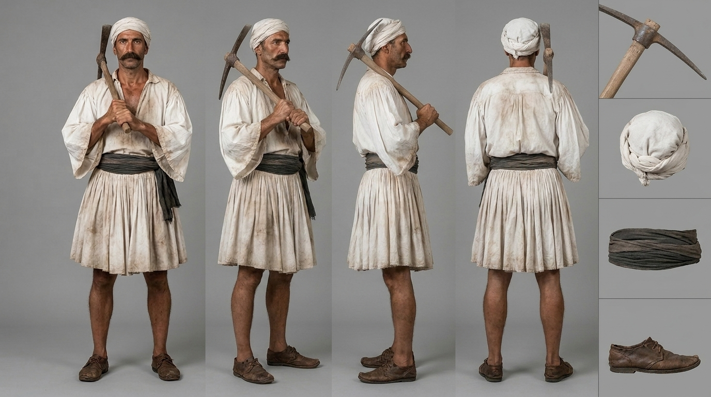
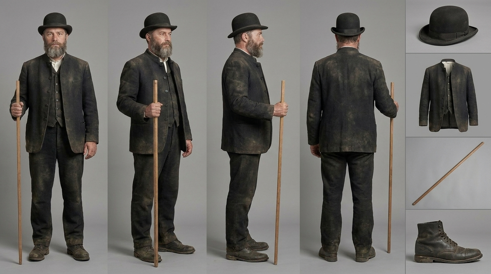
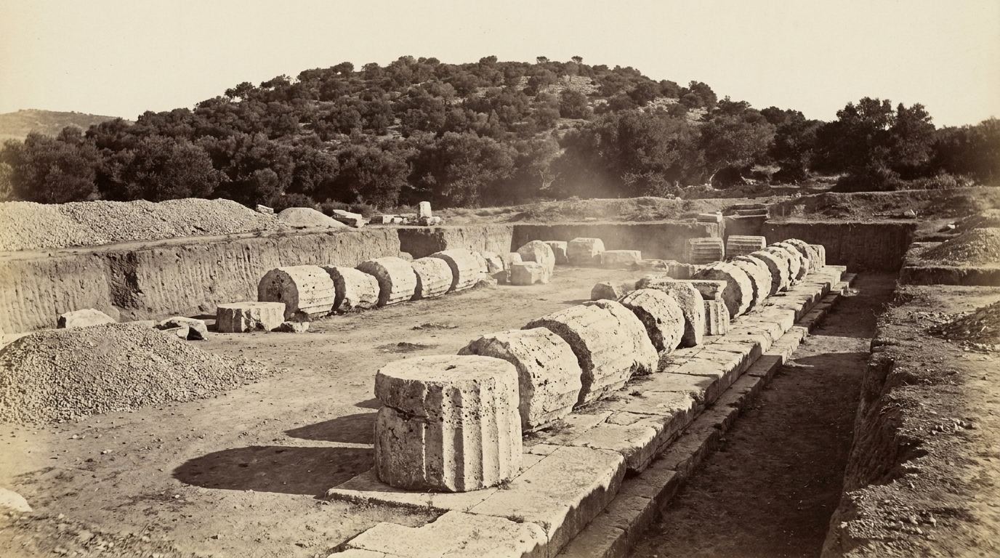
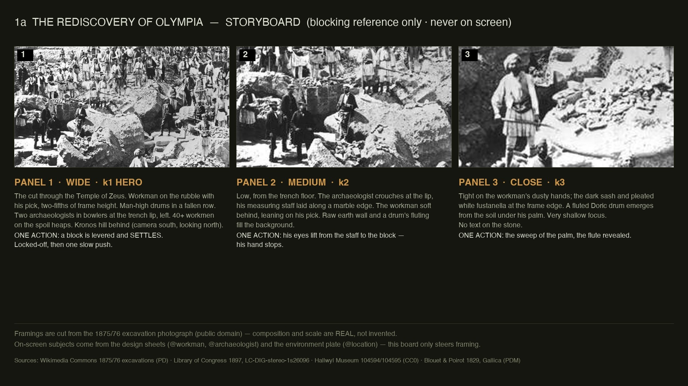
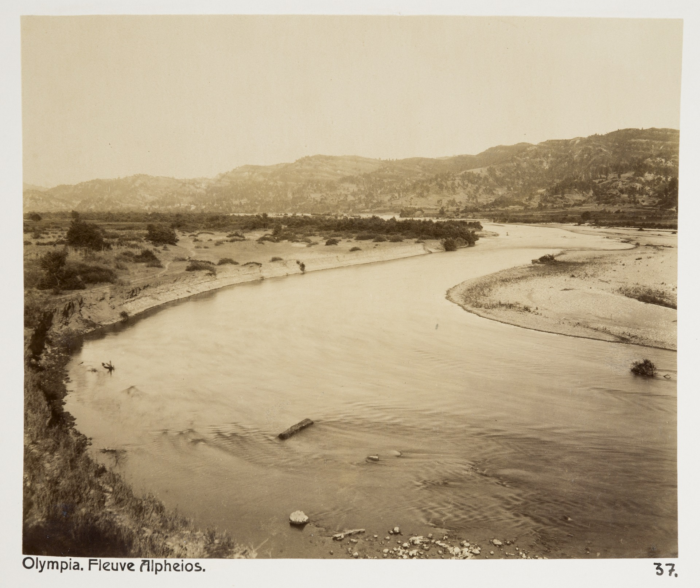

Empirica case study · live document
Every AI video pipeline says "trust us." This page shows one 20-second generation with every rule, belief, check and correction on the record — before, during and after the money is spent.
The loop being demonstrated
The subject: Shot "1a whole scene v2" of the Olympia trailer — the 1875 rediscovery of Olympia, five shots in one generation, with a new aerial opening over the Alpheios river.
1 · Skills declared, prompt flagged
Two skills govern this prompt: seedance-genhq (the multishot prompt format: timestamped shots, subject first, 10-15 words per second, one event per shot, a living final beat, diegetic audio only) and ai-camera-movements (the drone push-in block for the aerial, kept as its own instruction separate from the scene).
| Rule (seedance-genhq) | Result |
|---|---|
| Timestamps tile 0-20 s contiguously, hard-cut brackets | PASS |
| Subject + action in the first 20-30 words of every shot | PASS (5/5) |
| 10-15 words per second of directing text | Shot 1 FAILED at 18.0 w/s — trimmed to exactly 15.0. Shot 2: 14.8 after exempting the blocking/cut lines. Shots 3-5 pass raw. |
| One primary event per shot | PASS — the background crew is continuous activity, not a second event |
Final beat: with motion alive, no freeze language | PASS |
| The word "fast" absent (known jitter trigger) | PASS |
| Audio diegetic only, never music | PASS |
| References bound to roles and scoped, max 7 | PASS (6) |
2 · The ingredients






The aerial viewpoint itself is typed Invented in the claim ledger — no aerial photograph of Olympia existed in 1875 and the shot does not pretend one did. The river's course (Blouet 1829 plan) and look (Hallwyl photo) are Sourced.
3 · Model + connection
| Layer | Value |
|---|---|
| Model | Seedance 2.5, omni-reference (multiple image refs, no start-image lock) |
| Parameters | 20 s · 16:9 · 1080p · audio off · one take per iteration (take 2 ordered by the reviewer for variance) |
| Transport | Higgsfield platform, driven by the empirica-videogen practice via CLI |
| Who does what | storyboard writes and audits the spec · videogen translates nothing (the prompt is final) and runs + measures · every step logged in Empirica |
| Spec of record | scenes/1a-multishot-whole-scene-v2.md @ commit fcc4d68 |
4 · The prompt (final, audited)
[00:00-00:04] Shot 1: High aerial wide over the Olympia plain: the Alpheios river from @Image6 curves broad and sandy through the valley, the wooded Kronos hill at the far edge, the half-dug excavation from @Image4 small below with drum rows readable; no people yet. Drone push in, gliding toward the excavation, gently descending. Hard noon light, albumen tone. Hard cut to Shot 2. [00:04-00:10] Shot 2: The workman from @Image2 at the foot of the towering drum, opening on @Image1, brushes dust from his hands as two labourers behind him lever a limestone block with a timber bar; the block tips and settles with a drop of dust; the workman turns his head toward the block, and the archaeologist from @Image3 steps forward on the trench lip. Behind them the dig works on: more labourers dressed as @Image2 swing picks and carry earth along the trench. Match Panel 1 in @Image5. Locked-off wide, then one slow push toward the workman. Hard cut to Shot 3. [00:10-00:14] Shot 3: Two labourers dressed as @Image2, waist-up in profile, heave down together on the timber bar under the edge of the fluted drum; the drum's edge lifts a hand's width, rocks, and settles back with dust off its face as their shoulders drop. Close-up, shallow focus on hands and stone. Match Panel 2 in @Image5. Hard cut to Shot 4. [00:14-00:17] Shot 4: The workman's dusty hands from @Image2 sweep earth off the flute of a buried drum, the fluting emerging under his palm. Low angle from the trench floor, macro, very shallow focus. Match Panel 3 in @Image5. Hard cut to Shot 5. [00:17-00:20] Shot 5: Final beat: the archaeologist from @Image3 on the trench lip, medium three-quarter, takes off his bowler and looks down the uncovered colonnade; dust keeps drifting through the light past him through the closing frame. Audio: Natural diegetic sound only — wind over the plain and the faint wash of the river under Shot 1; picks on limestone, the timber bar creaking, the dull settle of stone into gravel, breath, distant voices. Full sound design. No music, no score. No bare chests, no Evzone parade dress, no pith helmet, no standing column, no modern object, no buildings, no roads, no text or lettering anywhere. Faces are not any real person.
5 · Calibration, before the run
Empirica opens every piece of work with a self-assessment (0 to 1) that is stored before the outcome is known. These are the actual numbers from this run's opening measurement — they cannot be edited after the fact:
And a written prediction per quality gate — the honest odds, stated before spending:
| # | Gate (measured against the prompt) | Predicted | Run 1 | Run 2 |
|---|---|---|---|---|
| G1 | Five cuts land on their timestamps (±0.5 s) | 0.85 | PASS cuts at 3.92/10.08/13.67/16.71 s, max off by 0.33 s | PASS |
| G2 | Same workman + same archaeologist across all five shots | 0.80 | PASS | PASS |
| G3 | Drum-to-man scale ratio > 1.0 in shots 2-3 | 0.75 | PASS | PASS |
| G4 | Each shot's primary event happens on the named object (block · drum edge · flute) | 0.70 | PARTIAL shots 3-5 clear; shot 2 event weak; shot 1 event failed | PARTIAL |
| G5 | Costume rules hold in every checked frame (no vest, no pith helmet, no bare chest) | 0.80 | PASS | PASS |
| G6 | Zero text or lettering anywhere | 0.90 | PASS sampled ~60 frames, not yet full-scan | PASS |
| G7 | Shot 1: no people, no modern features | 0.75 | PASS* | PASS* |
| G8 | Shot 1: the river reads like the Hallwyl photograph (broad + sandy, not a gorge) | 0.70 | PASS* | PASS* |
| G9 | Shot 2: background crew present and working from the first frame | 0.60 | FAIL crew present but posed, not working | FAIL |
| G10 | Hands render correctly in the close-ups (shots 3-4) | 0.65 | PASS | PASS |
* G7/G8 pass on a technicality: the shot's formal rules held while its design intent failed - see Run 1 below.
6 · The runs
REEVALUATE · Empirica case study · the working room with every version and ledger: production board · what Empirica is: main page